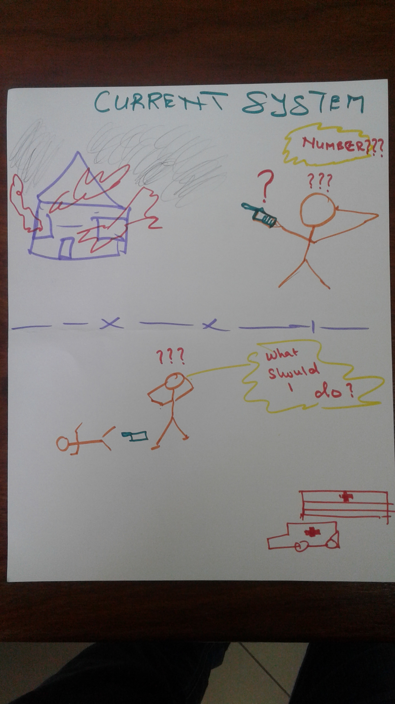
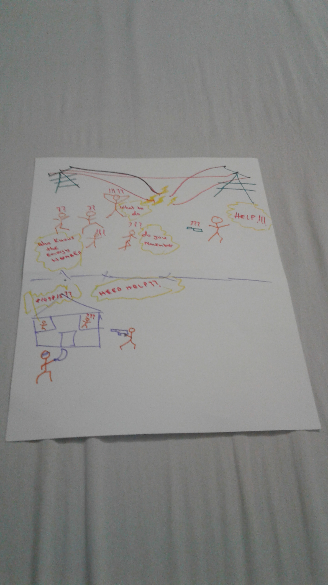
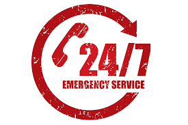
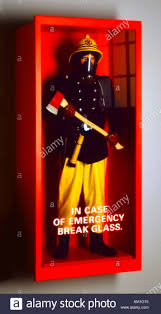
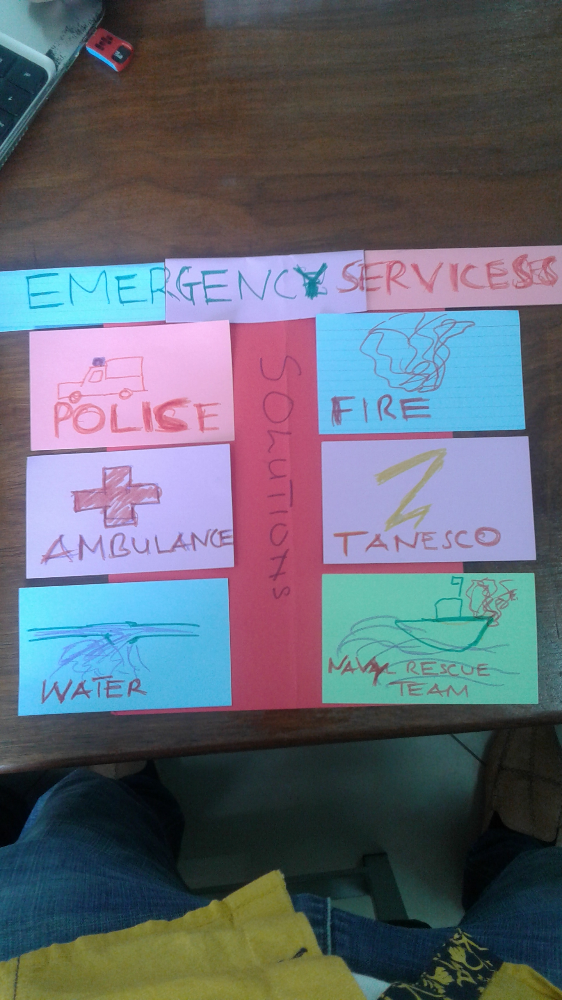
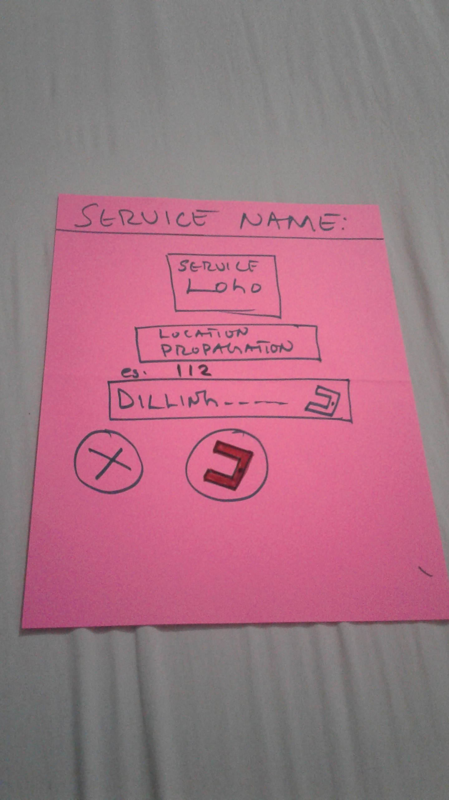
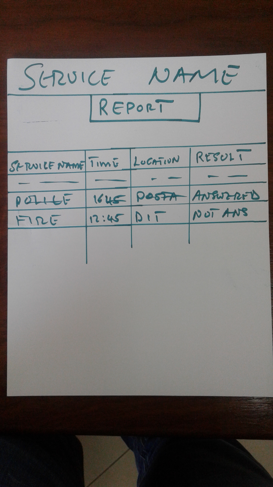
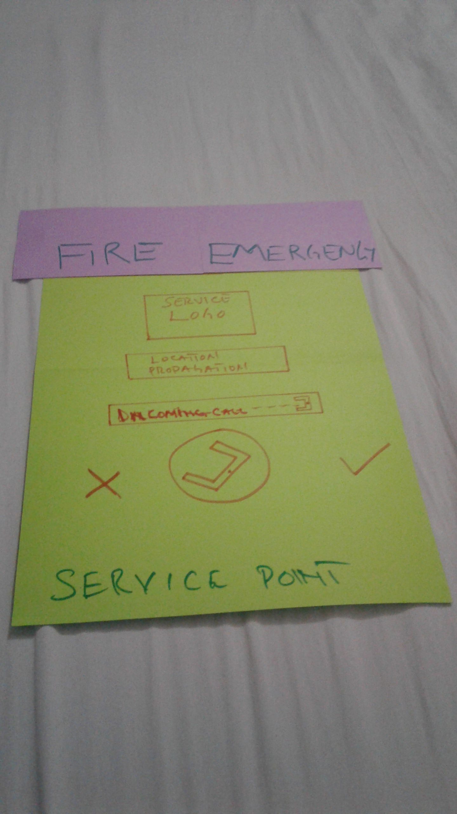
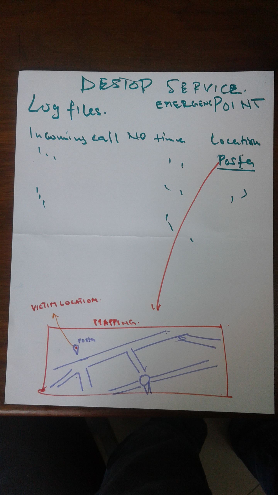

CURRENT SYSTEM/SITUATION
Here its come people don’t know which numbers to dial during fire attack in a house as demonstrated in figure 1 above. Second someone lying on ground ( victim ) then the other one need to call an ambulance and he was confused he forgot the contacts an drop the phone down and aski him/herself what should he/she do?
Now here it comes people who thought they are not the one to have emergency contacts they start asking who do remember the contacts and others are frustrated don’t know what to do there even if they have contact they forget where they keep it. Second the robberies attack the house people need help from police instead of dialing the police emergency number they are dialing the special offer numbers from mobile companies due to comfusion.
Problems
- They don’t have emergency contact
- They do have but during emergency they use to forget the contact due to frustrations and confusion of sudden action
- The authority not picking up the phone or late response and blaming citizen that they are the one who are late to make communitarian with them and cause huge disaster
- Due to frustration a victim are not able to describe their location well that lead to late service/rescue progress.
- People don’t have any idea on what to do or where to get help during emergency cases.
- People feel like they are not the one who need to have an emergency contacts or they keep records of contact in paper/book/phonebook and misplace it or seem to not have access on it during the emergency cases.
SOLUTION TO CURRENT SYSTEM PROBLEMS
  Now here it comes people who thought they are not the one to have emergency contacts they start asking who do remember the contacts and others are frustrated don’t know what to do there even if they have contact they forget where they keep it. Second the robberies attack the house people need help from police instead of dialing the police emergency number they are dialing the special offer numbers from mobile companies due to comfusion.
By creating an offline application that contain only buttons to access the emergency communication between victim and emergency service providers its simply you don’t have to memorize all emergency contacts… it’s just only one click to you service
After a click/selection of service this page will appear to victim (figure 4). Dialing process will appear with current location service logo and the number of service dialed.
During the dilling process the report page is created at background and can be viewed by all sides victim and service provider team for advance evidence and quality of service provided.
At side of emergency service provider this page will pop up during the incoming call from victim. It will include the current location of the victim
During the communication the service provider may nit understand well the location of victim… now the rescue team will access the more information of current location in map view including directions.